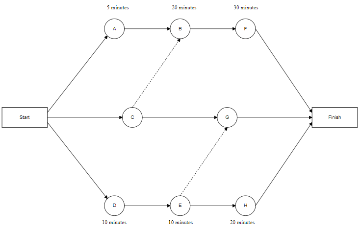
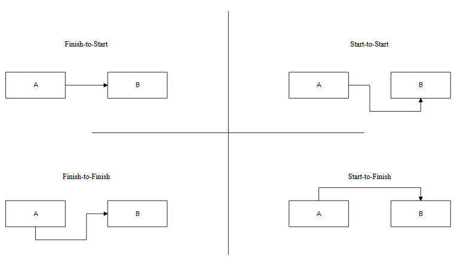

Project Schedule Management: Managing Activity Dependencies
Table of Contents
Intro Activity Sequencing Mandatory Dependency Discretionary Dependency External Dependency Internal Dependency How Do I Visualize All These Dependencies? Network Diagrams Arrow Diagram Method Precedence Diagram Method Wrap-Up SourcesIntroduction
Regardless of whether you’ve previously managed a project, or simply collaborated on a personal project with a team, you’ve likely been subjected to some form of project schedule management; for something as simple as performing surveys and gathering results, most activities can be accomplished asynchronously. That is, each group member can separately survey different demographics without having to wait for other group members to complete the surveying process. However, the dissection and analysis of this information is contingent upon all group members having surveyed their respective demographics. Within a complex project infrastructure, many project managers may become trapped in a rabbit hole of interdependencies, and this complexity can make it incredibly difficult to create a logical project schedule.
Activity Sequencing
After the project team has assembled a list of the activities that must be completed in order to properly realize the project, the next step is to figure out how to properly sequence each of them in the grand scheme. The relationships among the web of project activities will serve as a cornerstone for this sequence, and understanding how these different dependencies play a role in your projects will undoubtedly make or break your project schedule, since some will require certain features to be fully developed before another project activity may begin, and others can allow for asynchronous development between two or more activities.
Mandatory Dependency
Mandatory dependencies, commonly known as hard logic, are generally required in order to satisfy legal and contractual obligations; essentially, these dependencies require a rigid, synchronous sequence in which one activity is directly dependent on another, and may not begin until the team completes that required task.
Example of this dependency
An example of a mandatory dependency would be that, in order to begin crash testing a vehicle, the team is required to build a prototype.
Discretionary Dependency
Discretionary dependencies, commonly known as soft logic, delve into the land of ambiguity in contrast to the rigid structure of mandatory dependencies. These dependencies accommodate a degree of flexibility for the project team, and the sequence can be structured based on the team’s experience and best practices that could potentially apply to the context of the project environment.
Example of this dependency
For two separate project activities, it is possible that they can be performed either synchronously or asynchronously, depending on what the team asserts to be the best avenue to follow. For example:
- Activity 1: Develop a category system for a blog app
- Activity 2: Develop a subscription system for a blog app
Ultimately, these categories can be completed in any order, or even concurrently. The team may have developed similar systems in the past, and may decide that, based on their previous success, it may be the better option to develop a subscriptions system and incorporate it into blog categories; on the other hand, it could be a better idea to make two robust features that don’t necessarily need to directly communicate.
External Dependency
External dependencies establish a relationship between project activities and other activities that are not strictly confined to the project’s development; generally, other company branches and organizations will be wholly responsible for these external activities, and the project team is generally not directly involved.
Example of this dependency
An example of an external dependency between two project activities would be a situation where a project team requires special tools and hardware in order to begin developing software for a new construction robot; the project team itself may not be responsible for the acquisition of this equipment, and the project team’s development phases can not commence until the external organization has procured and provided it.
Internal Dependency
Internal dependencies are effectively relationships between two activities that are necessarily bound to the project’s context and the project team; these are not contingent on any external factors.
Example of this dependency
An example of an internal dependency could simply relate to the phases of the development cycle, wherein a feature must be developed before test cases can be written for it (or the other way around for test-driven development).
How do I Visualize All These Dependencies?
As you have seen, there are several common dependencies present in project infrastructures, and when you take all project activities into consideration, a cumbersome, nearly incomprehensible web of dependencies. Surely, there must be a way to map these dependencies to help visualize these interrelationships!
Network Diagrams
One of the most frequently used methods of mapping project activity dependencies is a network diagram. These diagrams explicitly show every project activity and their corresponding relationships with one another, depicting information that allows project managers and teams to determine not only the optimal sequence of activities, but also the duration that each activity may take to complete, allowing teams to more easily create a tentative schedule for the project. There are innumerable forms that network diagrams may adopt, but the most important ones in a project management context are the Arrow Diagram Method (ADM) and the Precedence Diagram Method (PDM).
Arrow Diagram Method
As the name indicates, the ADM creates relationships between activities by drawing arrows to connect different activity nodes, where a node represents a single project activity. The tail of each arrow indicates the start of an activity, and the head signifies completion, with the length of each arrow being proportional to the task’s length. A simple example of an ADM can be seen below in Figure 1.
Advantages of this Method
ADMs are relatively simple to create and can be understood by the entire project team due to its easily digestible format and minimalistic nature.
Disadvantages of this Method
ADMs only support what is known as a “finish-to-start” relationship between nodes, meaning that a rigid sequence exists between dependencies. This provides very little flexibility for more complex project schedules and structures.
Precedence Diagram Method
PDMs accommodate much more complex project structures; while they still use the node/arrow format of ADMs, these arrows can support a plethora of relationships:
- Finish-to-Start
- Indicates a strict, synchronous relationship between tasks
- Start-to-Finish
- Indicates a relationship where one task cannot begin until the other task starts
- Start-to-Start
- Indicates a relationship where one task can only begin once the other does
- Can technically begin both simultaneously, though not required
- Finish-to-Finish
- Indicates a relationship where one task cannot be completed until the other task is completed
An example of a basic PDM model can be seen below in Figure 2.
 Figure 2.The shifts in line direction indicate the non-linear format of every relationship besides finish-to-start and how delays may potentially occur between two tasks.
Advantages of this method
Because PDMs can portray more complex relationships between tasks, project teams can have a more detailed understanding of how delays involved in the completion of a particular task can affect the grand scheme of the project, based on future dependencies and their corresponding relationships, providing a much more accurate picture of the overarching project schedule.
Disadvantages of this method
The main disadvantage of using PDMs is that they lack the simplicity and minimalistic appeal of ADMS, and they take a longer amount of time to create and analyze. Ultimately, they can definitely become more difficult to understand.
Wrap-Up
In conclusion, it is highly evident that project schedules can become quite difficult to create and maintain as a result of the complexity involved in many software projects. Many different dependencies may exist among project activities, and utilizing network diagrams can provide a cohesive visual model that coalesces all of the project activities and their dependencies into a single chart. Regardless of whether you end up creating an ADM or a PDM, you will indubitably
\